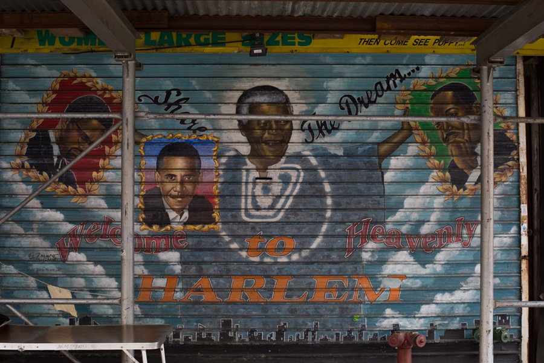
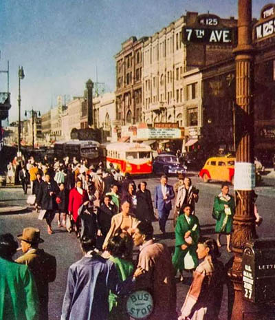
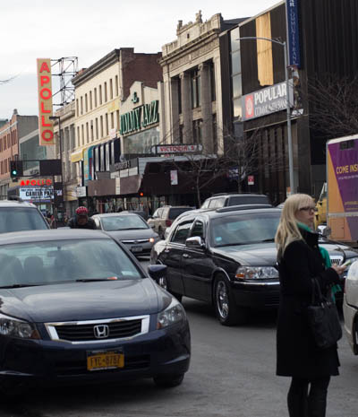

The heart of Harlem...

If Harlem is the home of soul music in New York City, then the Apollo Theater on W 125th St is its lounge room. The theater opened in 1934 and quickly became an international icon of the African-American community, hosting stars such as Sam Cooke, The Temptations and Etta James. Ella Fitzgerald was discovered at one of the Apollo's famous "Amateur Nights" in its inaugural year, when she entered to dance and decided to sing at the last minute. The Apollo was just one of several theaters in Harlem that opened as part of the Harlem Renaissance, a highly influential cultural movement in the 1920s and 30s that saw a growth of art, music and writing in African-American communities.

The street, W 125th St, is changing.
Only a handful of classic painted garage doors remain.
.The block that holds the Apollo Theater now also holds a GAP, Starbucks, American Apparel and MAC Cosmetics. The Victoria Theater, which along with the Apollo helped make 125th Harlem's "Opera Row", became a cinema until it was abandoned in the late 1980s. Soon it will become a 21-storey apartment tower with a hotel built to hold large-scale conferences.
The Apollo Theater doesn't have quite the pulling power it had in the past, but it still serves a strong function in the community: after James Brown's death in 2006, thousands came to the public viewing of his gold casket at the Apollo Theater. Plus, the famed Amateur Night continues.


Photo on the left: from an unknown magazine in the 1950s
Photo on the right: taken by Amber Jamieson in March 2014